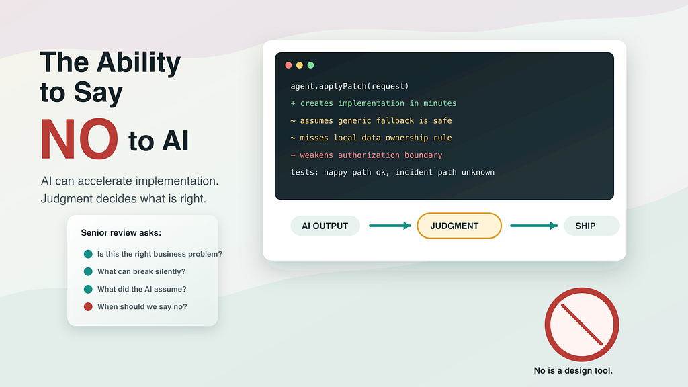
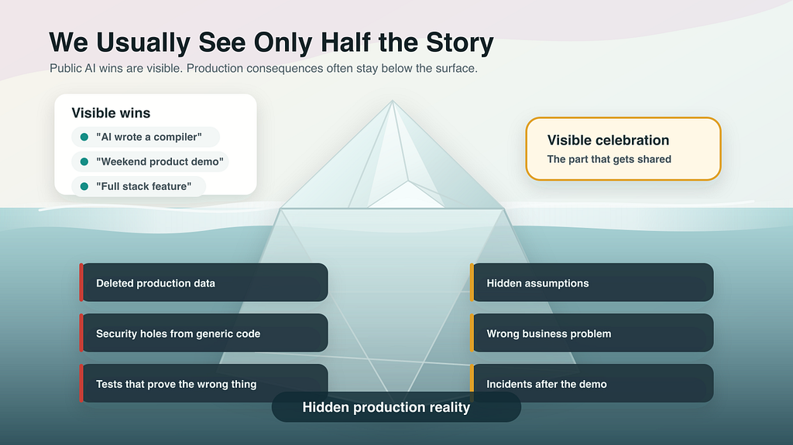
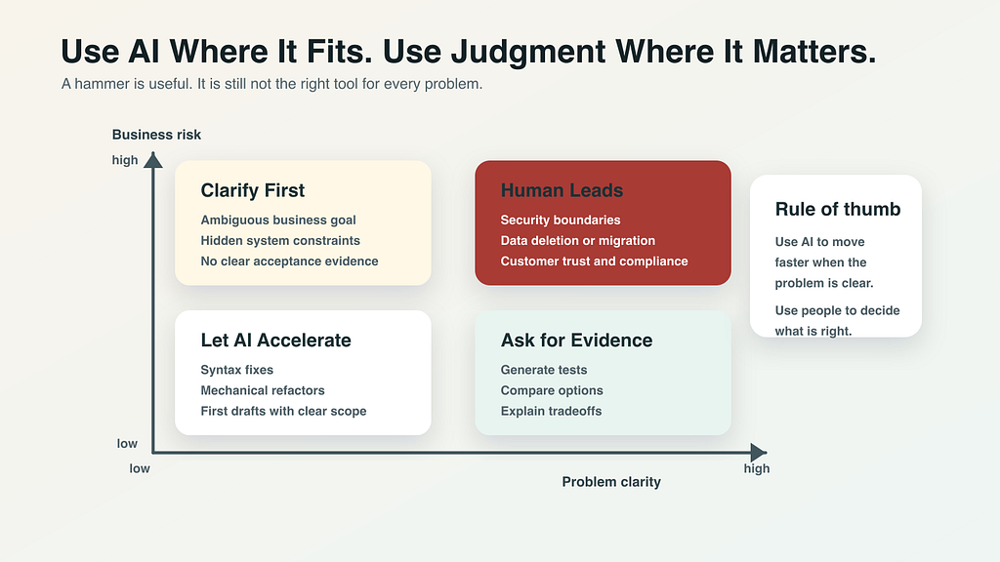

New Senior SKill in Agentic Coding

There is a small, dangerous moment in modern engineering. It happens after AI gives you an answer. The diff is clean, the explanation sounds confident, the code follows the local style, the generated tests are green, and the agent even tells you why the solution is reasonable. For a few seconds, it feels like the work is done. That moment is where experienced engineers earn their keep, because the most important question is no longer, “Can AI implement this?” Increasingly, of course it can. The harder question is whether this should be implemented at all, and if yes, whether this implementation is actually right for the business, the system, and the risks we own.
This is why one skill is becoming more valuable in the AI era: the ability to say “no” to AI. Not an emotional no, not an anti-AI no, and not a stubborn no from someone trying to protect the old way of working. I mean a professional no, the kind that says this is not the right problem, this pattern does not fit our system, this shortcut is unsafe, this test proves too little, this design will be cheap today and expensive forever, or this looks impressive but I would not want to defend it during an incident review. AI makes implementation faster. Engineering judgment decides whether the implementation deserves to exist.
We Usually See Only Half the Story
Most public AI stories are victory stories. Someone writes a compiler with AI, builds a polished product demo in a weekend, turns a vague idea into a working app before lunch, or shows an agent modifying a codebase while the audience watches the progress bar like a magic trick. Those stories are real, and they are exciting. I enjoy them too. But they are only the visible half of the story, and the visible half is naturally optimized for celebration.

The other half rarely becomes a keynote slide. It is the engineer staring at a terminal after a command ran against the wrong database. It is the security reviewer asking why generated code used a common pattern that ignored the actual authorization boundary. It is the team discovering that the tests are green because they only tested the happy path the AI invented. It is the migration that looked elegant until it met real production data, or the fallback that made an alert disappear by hiding the failure instead of fixing it. We see the celebration when AI writes the first version. We rarely see the cries and curses when the first version becomes production reality.
That missing half matters because it is where engineering experience lives. Real systems are not demos with better uptime. They have customers, contracts, permissions, legacy decisions, compliance boundaries, financial consequences, incident history, and strange edge cases that exist for painfully specific reasons. AI can produce code that looks like it belongs. That does not mean it belongs.
AI Common Sense Is Not Your System’s Common Sense
Every real system has its own common sense. Not the common sense you find in a textbook, and not the common sense that appears in a thousand open-source examples. I mean the local common sense of this service, this business, this customer base, this set of incidents, and this team. It is the kind of common sense that says, “We never retry that call because the downstream system is not idempotent,” or, “This field looks optional, but the largest customer depends on it,” or, “This ugly guardrail exists because three years ago someone removed it and we spent a weekend recovering.” These rules often look strange when you only read the code. They make sense when you know the history.
AI has a different kind of common sense. It has pattern common sense, built from huge amounts of code, documentation, explanations, examples, and arguments about what usually works. That is powerful, and it is why AI can be so helpful when you are exploring unfamiliar territory or trying to get a first draft. But “usually works” is not the same as “works here.” This is one of the most important mindset shifts: AI output is not truth, and it is not even a recommendation in the full human sense. It is a proposal generated from patterns. Sometimes it is an excellent proposal, sometimes it is a useful wrong answer, and sometimes it is a mirror that shows you what you forgot to specify. But it is still a proposal.
AI Owns Without Ego
There is something almost beautiful about how AI works: it owns the prompt without ego. It does not get defensive when you reject its answer, it does not feel embarrassed when it rewrites the same function five times, and it does not care if the solution is elegant, ugly, expensive, risky, or quietly wrong. It does not protect its pride. It simply continues. This is useful because it makes AI patient, tireless, and willing to explore options without complaining.
But there is a dangerous side to that same quality. AI will apply common best practices and common bad practices with the same emotional temperature. It may add validation, observability, clean abstractions, and meaningful tests. It may also add global state, vague error handling, shallow tests, unsafe defaults, weak authorization, outdated APIs, or a generic enterprise pattern that makes the system worse while looking more complete. It will not pause and say, “Actually, this is a bad idea for your business.” That pause has to come from the engineer.
Right and Wrong Are Judgment Calls
The word “wrong” is tricky in software. A syntax error is wrong in an obvious way, and a failing unit test is wrong in a visible way. But many important engineering mistakes are not wrong like arithmetic is wrong. They are wrong because they solve the wrong business problem, make a future incident more likely, create a security exposure that the local threat model cannot accept, hide a domain rule inside a generic abstraction, or make the codebase easier to demo and harder to operate.
AI, at the end, is a mathematical engine with enormous vector computation ability. That is impressive, and it can reason in useful ways, generate useful options, and help us inspect tradeoffs. But right and wrong in engineering are often judgment calls, not pure mathematical outcomes. Should we add a fallback, or should we fail loudly? Should we optimize the happy path, or protect the rare path because the rare path is where money is lost? Should we build this feature, or is the real problem a product decision, a process issue, or a customer misunderstanding? AI can help us think. It cannot be accountable for the judgment.
Know Where AI Is Best
The answer is not to use less AI. The answer is to use AI where it fits. AI is wonderful when the problem is clear and the cost of being wrong is contained. Let it draft, summarize, compare APIs, propose tests, explain stack traces, and search across a codebase to give you a map before you walk the terrain yourself. Used this way, it is a real force multiplier.

But when the business goal is unclear, when the blast radius is large, when security or data loss is involved, when customer trust is on the line, or when local system history matters, the human has to lead. This is where engineers need taste, not taste as decoration, but taste as judgment about fit. Do not treat every problem as a nail just because AI is a very impressive hammer. Also, do not spend one million tokens to resolve a syntax issue. A compiler error may need a careful read, not an agentic expedition across the universe. Use the right tool at the right scale. Save time. Save energy. Save the earth a little.
Fast Implementation Is Not the Same as Right Implementation
AI compresses the time between idea and implementation. That is the gift. It can also compress the time between misunderstanding and damage. That is the cost. The distance between “implemented quickly” and “implemented correctly” can be light years wide, and AI makes it easier to cross the first distance without automatically helping you cross the second.
If you cannot say no, AI does not only multiply your productivity. It multiplies your assumptions, your blind spots, and the number of plausible-looking changes you now have to understand. This is where junior and experienced engineers start to separate. A junior engineer may be impressed that AI produced a working patch. An experienced engineer is interested in the patch, but also suspicious of it: what did it assume, what did it not read, what behavior changed outside the obvious path, what risk did it make look normal, what business problem is this actually solving, and what evidence would make me comfortable shipping this? AI makes “how” cheaper. That makes “why” and “whether” more valuable.
A Practical Review Standard
Before accepting AI-generated work, I want to be able to tell a simple story about the change. Here is the problem we are solving. Here is how the system behaved before. Here is how it behaves after. Here are the assumptions the AI made. Here are the risks I checked. Here is the evidence that convinced me. If I cannot tell that story, I am not ready to accept the diff.
That does not mean I need to type every line by hand. It means I need to own every line I ship. The right response may be to ask AI for a smaller change, ask for more tests, inspect the data flow manually, clarify the requirement with a product partner, or reject the entire approach and start again. That is not anti-AI. That is professional engineering.
The New Senior Skill
The best engineers in the AI era will not be the ones who accept the most generated code. They will be the ones who combine AI speed with human judgment. They will know when to let AI draft and when to force it to explain, when to use it for exploration and when to read the source themselves, when to ask for ten options and when to delete nine of them, when to move fast and when to slow the room down.
Most importantly, they will know when to say “no.” No to the wrong problem, no to the unsafe shortcut, no to the impressive demo that does not survive production, no to the common pattern that does not fit the local system, and no to motion without direction. In the AI era, saying yes can make you fast. But knowing when to say no is what keeps you right.